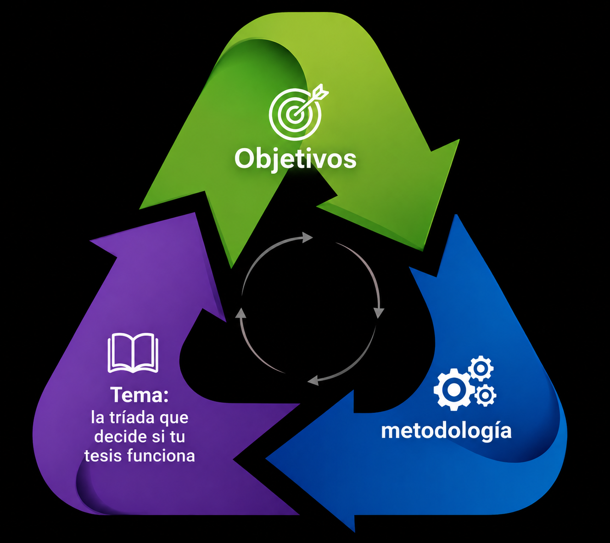

El núcleo lógico de toda investigación académica. Cuándo la tríada se rompe, los errores más frecuentes en cada elemento y cómo alinearlos para que tu tesis fluya.
Leer artículo →Desde el tema mal delimitado hasta las conclusiones vacías. Los 15 errores que hacen rechazar una tesis, con soluciones concretas para cada uno.
Motivación, foco, método y coraje. Los 15 consejos esenciales de Profes al Rescate para estudiantes universitarios de Argentina. Con PDF descargable.
El núcleo lógico de toda investigación. Errores frecuentes en cada elemento y cómo alinearlos para que tu tesis tenga coherencia metodológica real.
Descargá la versión en PDF para tener los 15 consejos siempre a mano. Ideal para imprimir o compartir con compañeros.
¿NECESITÁS AYUDA
CON TU TESIS?
Los artículos son el primer paso. El siguiente es hablar con un profesor real que lea tu trabajo y te diga exactamente qué hacer.
Consultar sin cargo →